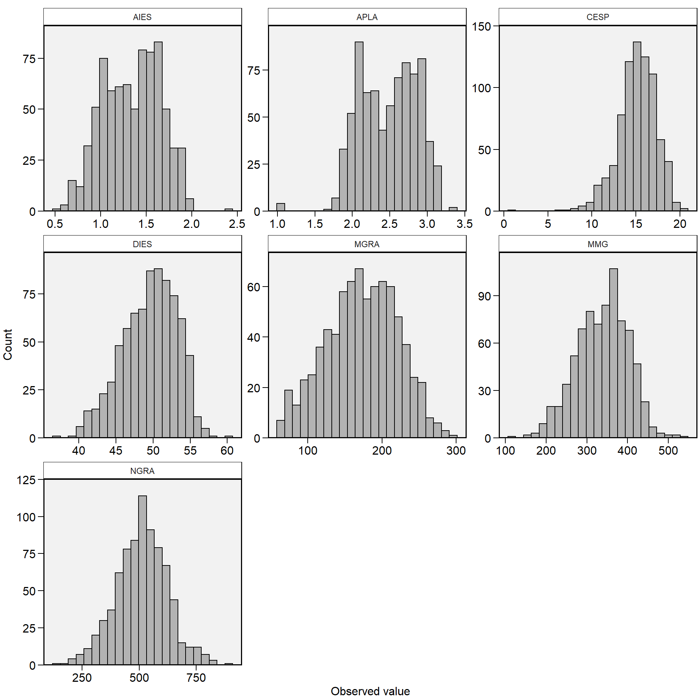

Capítulo 7 Manipulação de dados
Após seus dados estarem carregados no ambiente R, eles provavelmente necessitarão de alguma manimulação antes de serem utilizados em uma determinada análise. Esta manipulação pode envolver operações como exclusão de colunas, ordenamento de linhas com base em valores, criação de covariáveis (que serão resultado de operações com uma ou mais variáveis existentes), dentre muitas outras possibilidades. Felizmente, o pacote dplyr permite que esta manimulação seja relativamente fácil, lógica (do ponto de vista de digitação de códigos) e rápida, pois ele integra a linguagem C++ em suas funções.
O pacote dplyr é uma gramática de manipulação de dados. Nos rerferimos à gramática aqui porque ele fornece funções nomeadas como verbos simples, relacionados às tarefas mais comuns de manipulação de dados, para ajudá-lo a traduzir seus pensamentos em código. Este será o pacote utilizado para manipulação dos dados no decorrer deste material. De fato, a maioria dos dados em R podem ser manipulados utilizando os seguintes “verbos”.
filter()para selecionar linhas com base em seus valores.arrange()para reordenar as linhas.select()erename()para selecionar variáveis com base em seus nomes.mutate()etransmute()para adicionar novas variáveis que são funções de variáveis existentes.summarise()para resumir vários valores para um único valor.sample_n()esample_frac()para obter amostras aleatórias.
Anteriomente mencionamos que a manipulação dos dados com o pacote dplyr é lógica do ponto de vista da implementação do código. Isto só é possivel devido a utilização do operador %>% (forward-pipe operator), importado do pacote magrittr. Basicamente, este operador capta o argumento resultante de uma função à sua esquerda e passa como input à função à sua direita. Não é nossso objetivo aqui discutir os benefícios da utilização deste operador, mas uma pequena demonstração (com spoilers das funções do pacote dplyr) será apresentada. Considere as seguintes (e simples) operações. Crie um data frame com 100 linhas com as variáveis x e y contendo valores aleatórios. Adicione uma terceira variáveis (z) que será uma função da multiplicação de x e y, selecione apenas os valores de z menores que 10 e extraia a raiz quadrada destes valores. Finalmente, compute a média e armazene no object mean_sqrt.
- Utilizando as funções bases do R (código massivo)
set.seed(1)
data = tibble(x = runif(100, 0, 10),
y = runif(100, 0, 10))
data$z = data$x * data$y
data = subset(data, z < 10)
data = data[, 3]
sqr_dat = sqrt(data$z)
mean_sqrt = mean(sqr_dat)
mean_sqrt[1] 1.977507- Utilizando as funções bases do R (código mais limpo)
set.seed(1)
data = tibble(x = runif(100, 0, 10),
y = runif(100, 0, 10))
data$z = data$x * data$y
mean_sqrt = mean(sqrt(subset(data, z < 10)$z))
mean_sqrt[1] 1.977507- Utilizando o operdor
%>%
set.seed(1)
mean_sqrt = tibble(x = runif(100, 0, 10),
y = runif(100, 0, 10)) %>%
mutate(z = x * y) %>%
filter(z < 10) %>%
pull(z) %>%
sqrt() %>%
mean()
mean_sqrt [1] 1.977507A utilização do operador %>% parece não trazer tantos benefícios neste exemplo, visto que objetivo aqui foi demonstrar como ele permite uma implementação lógica das operações realizadas, captando a saída da função diretamente à esquerda (acima neste caso) e passando para a próxima função. Em operações mais complexas, no entanto, o %>% se mostrará muito mais útil.
O pacote metan fornece funções úteis para manipulação de dados. Duas principais categorias de funções serão utilizadas neste material:
- Utilitários para lidar com linhas e colunas
add_cols()eadd_rows()para adicionar colunas e linhas, respectivamente, com possibilidade de ordenamento das novas colunas ou linhas;all_pairs()para computar todos os possíveis pares entre níveis de um fator;column_exists()para checar se determinadas colunas existem;concatenate()para concatenar colunas;get_levels()para extrair os níveisde um fator;get_level_size()para identificar a quantidade de elementos em cada fator;reorder_cols()para reordenar colunas;remove_cols()eremove_rows()para remover colunas e linhas, respectivamente.select_numeric_cols()eselect_non_numeric_cols()para selecionar apenas variáveis numéricas e não-numéricas, respectivamente;select_cols()eselect_rows()para selecionar colunas e linhas, respectivamente.
- Utilitários para lidar com números e strings
all_lower_case()eall_upper_case()converte todas as seqüências não numéricas de um quadro de dados para minúsculas e maiúsculas, respectivamente;extract_number()eextract_string()extrai todas os números e letras (ignorando maiúsculas e minúsculas) de uma ou mais colunas.replace_number()ereplace_string()substitui todas os números e letras (ignorando maiúsculas e minúsculas) de uma ou mais colunas;round_cols(): arredonda uma coluna selecionada ou um data frame completo para valores significativos.
O conjunto de dados maize será utilizado como exemplo para as operações de manipulação de dados. O primeiro passo é carregálo no ambiente de trabalho.
Classes 'tbl_df', 'tbl' and 'data.frame': 780 obs. of 10 variables:
$ AMB : chr "A1" "A1" "A1" "A1" ...
$ HIB : chr "H1" "H1" "H1" "H1" ...
$ REP : chr "I" "I" "I" "I" ...
$ APLA: num 2.45 2.5 2.69 2.8 2.62 2.12 3.15 2.97 3.1 3.02 ...
$ AIES: num 2.39 1.43 1.52 1.64 1.55 1.8 1.78 1.84 1.78 1.6 ...
$ CESP: num 16.9 14.4 16.5 16.8 15.9 15 10.9 15 13.6 16.3 ...
$ DIES: num 52.1 50.7 54.7 52 51.6 ...
$ MGRA: num 228 187 230 213 224 ...
$ MMG : num 375 437 464 408 406 ...
$ NGRA: num 609 427 497 523 551 529 294 528 538 582 ...7.1 Adicionar novas variáveis
A função mutate() é utilizada quando se deseja adicionar novas variáveis no conjunto de dados. Estas variáveis são funções de variáveis existentes. Como exemplo, vamos criar uma nova variável chamada PRE_2 no conjunto de dados maize, qual será a razão entre AIES e APLA. Note que a função adiciona a nova variável após a última variável origina e mantém todas as demais. Digamos que queríamos adicionar a nova variável criada após a variável REP, a seguinte abordagem com o pacote dplyr deve ser usada.
# A tibble: 780 x 11
AMB HIB REP PRE_2 APLA AIES CESP DIES MGRA MMG NGRA
<chr> <chr> <chr> <dbl> <dbl> <dbl> <dbl> <dbl> <dbl> <dbl> <dbl>
1 A1 H1 I 0.976 2.45 2.39 16.9 52.1 228. 375. 609
2 A1 H1 I 0.572 2.5 1.43 14.4 50.7 187. 437. 427
3 A1 H1 I 0.565 2.69 1.52 16.5 54.7 230. 464. 497
4 A1 H1 I 0.586 2.8 1.64 16.8 52.0 213. 408. 523
5 A1 H1 I 0.592 2.62 1.55 15.9 51.6 224. 406. 551
6 A1 H1 II 0.849 2.12 1.8 15 51.4 203. 383. 529
7 A1 H1 II 0.565 3.15 1.78 10.9 41.9 75.2 256. 294
8 A1 H1 II 0.620 2.97 1.84 15 53.4 204. 387. 528
9 A1 H1 II 0.574 3.1 1.78 13.6 50.8 187. 348. 538
10 A1 H1 II 0.530 3.02 1.6 16.3 53.9 250. 430. 582
# … with 770 more rowsCom a função add_cols(), o mesmo resultado pode ser obtido com:
# A tibble: 780 x 11
AMB HIB REP PRE_2 APLA AIES CESP DIES MGRA MMG NGRA
<chr> <chr> <chr> <dbl> <dbl> <dbl> <dbl> <dbl> <dbl> <dbl> <dbl>
1 A1 H1 I 0.976 2.45 2.39 16.9 52.1 228. 375. 609
2 A1 H1 I 0.572 2.5 1.43 14.4 50.7 187. 437. 427
3 A1 H1 I 0.565 2.69 1.52 16.5 54.7 230. 464. 497
4 A1 H1 I 0.586 2.8 1.64 16.8 52.0 213. 408. 523
5 A1 H1 I 0.592 2.62 1.55 15.9 51.6 224. 406. 551
6 A1 H1 II 0.849 2.12 1.8 15 51.4 203. 383. 529
7 A1 H1 II 0.565 3.15 1.78 10.9 41.9 75.2 256. 294
8 A1 H1 II 0.620 2.97 1.84 15 53.4 204. 387. 528
9 A1 H1 II 0.574 3.1 1.78 13.6 50.8 187. 348. 538
10 A1 H1 II 0.530 3.02 1.6 16.3 53.9 250. 430. 582
# … with 770 more rows7.2 Concatenar colunas
A função concatetate() pode ser usada para concatenar várias colunas de um conjunto de dados.
# A tibble: 780 x 11
AMB HIB REP APLA AIES CESP DIES MGRA MMG NGRA new_var
<chr> <chr> <chr> <dbl> <dbl> <dbl> <dbl> <dbl> <dbl> <dbl> <chr>
1 A1 H1 I 2.45 2.39 16.9 52.1 228. 375. 609 A1_H1_I
2 A1 H1 I 2.5 1.43 14.4 50.7 187. 437. 427 A1_H1_I
3 A1 H1 I 2.69 1.52 16.5 54.7 230. 464. 497 A1_H1_I
4 A1 H1 I 2.8 1.64 16.8 52.0 213. 408. 523 A1_H1_I
5 A1 H1 I 2.62 1.55 15.9 51.6 224. 406. 551 A1_H1_I
6 A1 H1 II 2.12 1.8 15 51.4 203. 383. 529 A1_H1_II
7 A1 H1 II 3.15 1.78 10.9 41.9 75.2 256. 294 A1_H1_II
8 A1 H1 II 2.97 1.84 15 53.4 204. 387. 528 A1_H1_II
9 A1 H1 II 3.1 1.78 13.6 50.8 187. 348. 538 A1_H1_II
10 A1 H1 II 3.02 1.6 16.3 53.9 250. 430. 582 A1_H1_II
# … with 770 more rowsUtilizando a função case_when() é possível criar uma variável baseado em um argumento if() vetorizado. case_when() é particularmente útil dentro da função mutate() quando você quer criar uma nova variável que depende de uma combinação complexa de variáveis existentes. No exemplo abaixo, uma nova variável será criada, dependendo dos valores de APLA, AIES ou CESP
maize %>%
mutate(
CASE = case_when(
MGRA > 280 | APLA < 1.3 | NGRA > 820 ~ "Selecionar",
APLA > 2.3 ~ "Alto",
MGRA < 130 ~ "Pouco produtivo",
TRUE ~ "Outro"
)
)# A tibble: 780 x 11
AMB HIB REP APLA AIES CESP DIES MGRA MMG NGRA CASE
<chr> <chr> <chr> <dbl> <dbl> <dbl> <dbl> <dbl> <dbl> <dbl> <chr>
1 A1 H1 I 2.45 2.39 16.9 52.1 228. 375. 609 Alto
2 A1 H1 I 2.5 1.43 14.4 50.7 187. 437. 427 Alto
3 A1 H1 I 2.69 1.52 16.5 54.7 230. 464. 497 Alto
4 A1 H1 I 2.8 1.64 16.8 52.0 213. 408. 523 Alto
5 A1 H1 I 2.62 1.55 15.9 51.6 224. 406. 551 Alto
6 A1 H1 II 2.12 1.8 15 51.4 203. 383. 529 Outro
7 A1 H1 II 3.15 1.78 10.9 41.9 75.2 256. 294 Alto
8 A1 H1 II 2.97 1.84 15 53.4 204. 387. 528 Alto
9 A1 H1 II 3.1 1.78 13.6 50.8 187. 348. 538 Alto
10 A1 H1 II 3.02 1.6 16.3 53.9 250. 430. 582 Alto
# … with 770 more rowsA função transmute() cria a nova variável e exclui todas as demais. Em adição, se o resultado da função precisa ser extraído para um vetor numérico, basta adicionar a função pull(), conforme segue
7.3 Selecionar linhas com base em seus valores
Utilizando a função filter() é possivel filtrar as linhas de um conjunto de dados com base no valor de suas variáveis. No primeiro exemplo, selecionaremos as linhas onde o valor da variável MGRA é maior que 280.
# A tibble: 4 x 10
AMB HIB REP APLA AIES CESP DIES MGRA MMG NGRA
<chr> <chr> <chr> <dbl> <dbl> <dbl> <dbl> <dbl> <dbl> <dbl>
1 A1 H6 I 2.92 1.64 18 56.0 289. 393. 734
2 A1 H10 I 2.92 1.61 20.3 55.4 283. 441. 641
3 A1 H13 II 2.47 1.28 15.3 53.0 291. 417. 698
4 A4 H10 I 2.65 1.47 14 50.3 287. 275. 493No segundo exemplo, selecionaremos apenas as linhas onde a MGRA é maior que 220 OU a APLA é menor que 1.3 OU o NGRA é maior que 820.
# A tibble: 10 x 10
AMB HIB REP APLA AIES CESP DIES MGRA MMG NGRA
<chr> <chr> <chr> <dbl> <dbl> <dbl> <dbl> <dbl> <dbl> <dbl>
1 A1 H6 I 2.92 1.64 18 56.0 289. 393. 734
2 A1 H10 I 2.92 1.61 20.3 55.4 283. 441. 641
3 A1 H13 II 2.47 1.28 15.3 53.0 291. 417. 698
4 A2 H8 II 1.03 0.69 10.8 44.8 94.8 277. 342
5 A2 H10 III 1.09 0.92 15 47.6 166. 299. 555
6 A3 H10 I 1.04 0.71 14.8 45.5 112. 265. 423
7 A3 H11 I 1 0.65 14.5 43.6 120. 210. 571
8 A4 H8 I 2.65 1.67 18 50 277. 251. 903
9 A4 H8 I 2.95 1.7 18.6 52.9 249. 302. 824
10 A4 H10 I 2.65 1.47 14 50.3 287. 275. 493No último exemplo, selecionaremos apenas as linhas onde MGRA é maior que é maior que 220 E a APLA é menor que 2.
# A tibble: 1 x 10
AMB HIB REP APLA AIES CESP DIES MGRA MMG NGRA
<chr> <chr> <chr> <dbl> <dbl> <dbl> <dbl> <dbl> <dbl> <dbl>
1 A1 H6 II 1.97 1.63 17.1 54.7 230. 375. 614Isto é aproximadamente equivalente ao seguinte código R base.
7.4 Resumir um conjunto de dados
A função count() pode ser utilizada para contar valores que se repetem em uma determinada variável. Por exemplo, é possível identificar qual é o valor de APLA que mais se repete utilizando
# A tibble: 143 x 2
APLA n
<dbl> <int>
1 2.6 20
2 2.8 20
3 2.5 16
4 2 14
5 2.92 14
6 2.1 13
7 2.3 12
8 2.7 12
9 1.92 11
10 2.04 11
# … with 133 more rowsPara identificar quais os valores distintos de APLA foram observados a função distinct().
# A tibble: 143 x 1
APLA
<dbl>
1 2.45
2 2.5
3 2.69
4 2.8
5 2.62
6 2.12
7 3.15
8 2.97
9 3.1
10 3.02
# … with 133 more rowsUtilizando a função summarise() é possível criar uma ou mais variáveis escalares resumindo as variáveis de um tibble existente. Como resultado, uma linha é retornada. O seguinte código calcula a média global da MGRA e retorna o n utilizado na estimativa.
# A tibble: 1 x 2
MGRA_mean n
<dbl> <int>
1 173. 780Muitas vezes é necessário computar uma determinada função (como a média) para cada nível de uma variável categórica. Felizmente, o pacote dplyr possibilita que isto seja realizado facilmente. Continuamos no mesmo exemplo anterior. Neste caso, no entanto, o objetivo é calcular a média da MGRA para cada híbrido. Utilizando a função group_by() antes da função summarise() uma linha de resultado para cada nível do fator híbrido é retornado.
# A tibble: 13 x 3
HIB MGRA_mean n
<chr> <dbl> <int>
1 H1 184. 60
2 H10 164. 60
3 H11 167. 60
4 H12 157. 60
5 H13 180. 60
6 H2 187. 60
7 H3 169. 60
8 H4 184. 60
9 H5 184. 60
10 H6 188. 60
11 H7 171. 60
12 H8 160. 60
13 H9 153. 60Até aqui vimos como a média (global ou para cada híbrido) da MGRA pode ser calculada. Quase sempre, no entanto, quando calculamos a média (ou qualquer outra medida) em um conjunto de dados, queremos fazê-la para todas as variáveis numéricas. Implementar isto com dplyr é relativamente fácil. Existem basicamente três opções para isto, utilizando as variantes summarise_all(), summarise_if(), ou summarise_at(). Todos os verbos principais do pacote dplyr apresentam estas variantes, o que torna fácil aplicar a mesma função para múltiplas variáveis. Estas três variantes proporcionam:
_all()aplicar a função a todas as variáveis;_at()aplicar a função a variáveis selecionadas com vetores de caracteres ou utilizandovars()_if()aplicar a função a variáveis selecionadas com uma função, por exemplois.numeric().
Veremos como estas variantes funcionam, calculando a média para as variáveis do conjunto de dados.
# A tibble: 1 x 10
AMB HIB REP APLA AIES CESP DIES MGRA MMG NGRA
<dbl> <dbl> <dbl> <dbl> <dbl> <dbl> <dbl> <dbl> <dbl> <dbl>
1 NA NA NA 2.48 1.34 15.2 49.5 173. 339. 512.Note que utilizando a função summarise_all() a média para todas as variáveis numéricas foi calculada e um valor NA foi retornado para as variáveis categóricas. Se o objetivo é computar a média somente para as variáveis numéricas (o que é o mais lógico), a função summarise_if() é a melhor escolha.
# A tibble: 1 x 7
APLA AIES CESP DIES MGRA MMG NGRA
<dbl> <dbl> <dbl> <dbl> <dbl> <dbl> <dbl>
1 2.48 1.34 15.2 49.5 173. 339. 512.Funções próprias podem ser aplicadas dentro da função summarise para computar uma estatística personalizada. Como exemplo, vamos criar uma função chamada mse que retornará o valor da média e o erro padrão da média e aplicá-la para cada nível do fator AMB.
mse = function(x){
me = round(mean(x), 3)
se = round(sd(x)/sqrt(n()), 3)
return(paste(me, "+-", se))
}
maize %>%
group_by(AMB) %>%
summarise(MGRA_mean_se = mse(MGRA))# A tibble: 4 x 2
AMB MGRA_mean_se
<chr> <chr>
1 A1 199.437 +- 3.232
2 A2 168.436 +- 3.381
3 A3 146.811 +- 2.787
4 A4 177.072 +- 3.118Se desejamos computar mais de uma função para variáveis específicas, então o próximo código nos ajudará. Note que para aplicar mais de uma função é necessário declarar o argumento .funs e criar um vetor com o nome das funções. Neste caso, os sufixos _m e _sd representam a média e o desvio padrão, respectivamente.
maize %>%
group_by(AMB) %>%
summarise_at(vars(starts_with("M"),
ends_with("S"),
contains("GR")),
.funs = c(m = mean, sd = sd))# A tibble: 4 x 11
AMB MGRA_m MMG_m AIES_m DIES_m NGRA_m MGRA_sd MMG_sd AIES_sd DIES_sd NGRA_sd
<chr> <dbl> <dbl> <dbl> <dbl> <dbl> <dbl> <dbl> <dbl> <dbl> <dbl>
1 A1 199. 360. 1.58 51.6 558. 45.1 58.1 0.187 3.23 117.
2 A2 168. 334. 1.31 48.7 505. 47.2 67.9 0.369 3.53 103.
3 A3 147. 318. 1.08 47.9 468. 38.9 61.7 0.225 3.57 110.
4 A4 177. 343. 1.41 49.9 516. 43.5 58.6 0.212 3.35 106.Nos deparamos aqui com três termos não vistos até então: starts_with(), ends_with() e contains(). Estes select helpers facilitam muito a seleção de variáveis. Estas funções nos ajudam a selecionar variávies baseado em seus nomes, da seguinte forma:
starts_with()seleciona variáveis que iniciam com um determinado prefixo. No exemplo anterior, a variável MGRA foi selecionada por esta função.ends_with()seleciona variáveis que terminam com um determinado sufixo. No exemplo anterior as variáveis AIES e DIES foram selecionadas por esta função.contains()seleciona variáveis que contém determinados caracteres. No exemplo anterior, NGRA foi selecionada pois contém GR, mas não inicia com M e nem termina com S.
A função desc_stat() pode ser usada para calcular medidas de tendência central, posição e dispersão. Por padrão, sete estatísticas (coeficiente de variação, máximo, média, mediana, mínimo, erro padrão e variação da amostra) são computadas. Para calcular todas as estatísticas, use o argumento stats ="all" ou use um vetor separado por vírgula com os nomes das estatísticas, por exemplo, stats = c("mean, CV"). Use hist = TRUE para criar um histograma para cada variável.

# A tibble: 7 x 8
Statistic AIES APLA CESP DIES MGRA MMG NGRA
<chr> <dbl> <dbl> <dbl> <dbl> <dbl> <dbl> <dbl>
1 CV 23.4 15.1 14.3 7.46 27.5 18.7 22.2
2 max 2.39 3.3 20.4 59.7 291. 546. 903
3 mean 1.34 2.48 15.2 49.5 173. 339. 512.
4 median 1.38 2.52 15.4 50.0 174. 344. 517
5 min 0.5 1 0.8 36.4 58.5 123. 147
6 SE.mean 0.0113 0.0134 0.0774 0.132 1.71 2.27 4.06
7 var.amo 0.0989 0.141 4.68 13.6 2268. 4030. 12882. Para calcular as estatísticas para cada nível de um fator, use a função split_factor() antes de chamar desc_stat(). Além disso, é possível selecionar as estatísticas a serem calculadas usando o argumento stats, que é um vetor de nomes separados por vírgula com" apenas no início e no final do vetor.
- Isso funcionará:
stats = c ("mean, SE.mean, CV, max, min")stats = "mean"
- Isso NÃO funcionará:
stats = c("mean, "SE.mean", "CV", "max", "min")stats = c("mean, SE.mean, CV, max, min ")
stats2 <-
maize%>%
split_factors(HIB)%>%
desc_stat(contains("A"),
stats = "all",
verbose = FALSE)
stats2# A tibble: 364 x 6
HIB Statistic AIES APLA MGRA NGRA
<chr> <chr> <dbl> <dbl> <dbl> <dbl>
1 H1 AV.dev 0.266 0.290 34.0 77.8
2 H1 CI.mean 0.0836 0.0888 11.3 28.2
3 H1 CV 21.5 13.1 23.9 21.6
4 H1 gm.mean 1.47 2.60 178. 493.
5 H1 hm.mean 1.43 2.57 170. 474.
6 H1 IQR 0.515 0.528 49.2 93.2
7 H1 Kurt -0.591 -1.12 -0.0764 1.10
8 H1 mad 0.378 0.408 35.6 76.4
9 H1 max 2.39 3.15 260. 768
10 H1 mean 1.50 2.62 184. 507.
# … with 354 more rowsPodemos converter os resultados acima em um formato wide usando a função desc_wider()
# A tibble: 13 x 29
HIB AV.dev CI.mean CV gm.mean hm.mean IQR Kurt mad max mean
<chr> <dbl> <dbl> <dbl> <dbl> <dbl> <dbl> <dbl> <dbl> <dbl> <dbl>
1 H1 0.266 0.0836 21.5 1.47 1.43 0.515 -0.591 0.378 2.39 1.50
2 H10 0.274 0.0816 25.0 1.22 1.19 0.47 -1.01 0.356 1.94 1.26
3 H11 0.269 0.0777 23.8 1.23 1.19 0.505 -1.08 0.371 1.91 1.27
4 H12 0.290 0.0873 26.4 1.23 1.17 0.515 -0.952 0.304 1.79 1.28
5 H13 0.236 0.0721 20.6 1.32 1.30 0.455 -1.05 0.311 1.93 1.35
6 H2 0.252 0.0778 21.9 1.34 1.31 0.453 -0.882 0.341 1.96 1.38
7 H3 0.284 0.0879 24.1 1.37 1.32 0.532 -1.07 0.348 1.96 1.41
8 H4 0.273 0.0853 23.2 1.38 1.33 0.47 -0.828 0.252 1.99 1.43
9 H5 0.246 0.0777 21.9 1.33 1.29 0.433 -0.691 0.304 1.91 1.37
10 H6 0.199 0.0620 17.0 1.39 1.37 0.375 -0.930 0.274 1.91 1.41
11 H7 0.223 0.0676 19.8 1.29 1.27 0.434 -1.05 0.297 1.85 1.32
12 H8 0.245 0.0781 25.1 1.17 1.12 0.400 -0.975 0.326 1.7 1.21
13 H9 0.271 0.0852 26.0 1.23 1.18 0.498 -0.978 0.371 1.84 1.27
# … with 18 more variables: median <dbl>, min <dbl>, n <dbl>, Q2.5 <dbl>,
# Q25 <dbl>, Q75 <dbl>, Q97.5 <dbl>, range <dbl>, SD.amo <dbl>, SD.pop <dbl>,
# SE.mean <dbl>, skew <dbl>, sum <dbl>, sum.dev <dbl>, sum.sq.dev <dbl>,
# valid.n <dbl>, var.amo <dbl>, var.pop <dbl>7.5 Selecionar variáveis com base em seus nomes
A função select() é utilizada para selecionar variáveis de um conjunto de dados. O seguinte código seleciona as variáveis MGRA e AIES do conjunto de dados
# A tibble: 780 x 2
MGRA AIES
<dbl> <dbl>
1 228. 2.39
2 187. 1.43
3 230. 1.52
4 213. 1.64
5 224. 1.55
6 203. 1.8
7 75.2 1.78
8 204. 1.84
9 187. 1.78
10 250. 1.6
# … with 770 more rowsPara selecionar apenas as variáveis numéricas, vamos utilizar a função select_numeric_cols() do pacote metan. Variáveis não numéricas podem ser selecionadas com select_non_numeric_cols()
# A tibble: 780 x 7
APLA AIES CESP DIES MGRA MMG NGRA
<dbl> <dbl> <dbl> <dbl> <dbl> <dbl> <dbl>
1 2.45 2.39 16.9 52.1 228. 375. 609
2 2.5 1.43 14.4 50.7 187. 437. 427
3 2.69 1.52 16.5 54.7 230. 464. 497
4 2.8 1.64 16.8 52.0 213. 408. 523
5 2.62 1.55 15.9 51.6 224. 406. 551
6 2.12 1.8 15 51.4 203. 383. 529
7 3.15 1.78 10.9 41.9 75.2 256. 294
8 2.97 1.84 15 53.4 204. 387. 528
9 3.1 1.78 13.6 50.8 187. 348. 538
10 3.02 1.6 16.3 53.9 250. 430. 582
# … with 770 more rows# A tibble: 780 x 3
AMB HIB REP
<chr> <chr> <chr>
1 A1 H1 I
2 A1 H1 I
3 A1 H1 I
4 A1 H1 I
5 A1 H1 I
6 A1 H1 II
7 A1 H1 II
8 A1 H1 II
9 A1 H1 II
10 A1 H1 II
# … with 770 more rowsSe o objetivo é excluir as variáveis basta utilizar a função remove_cols(). No próximo exemplo, serão selecionadas todas as variáveis, exceto aquelas que contém A no nome.
# A tibble: 780 x 5
HIB REP CESP DIES MMG
<chr> <chr> <dbl> <dbl> <dbl>
1 H1 I 16.9 52.1 375.
2 H1 I 14.4 50.7 437.
3 H1 I 16.5 54.7 464.
4 H1 I 16.8 52.0 408.
5 H1 I 15.9 51.6 406.
6 H1 II 15 51.4 383.
7 H1 II 10.9 41.9 256.
8 H1 II 15 53.4 387.
9 H1 II 13.6 50.8 348.
10 H1 II 16.3 53.9 430.
# … with 770 more rowsExercício 2
Crie uma variável chamada MGRA_kg qual será o resultado em quilogramas da massa de grãos.
Selecione somente as colunas HIB, AMB, REP e MGRA_Kg.
Selecione somente as cinco linhas com maior valor de MGRA_Kg.
7.6 Ordenar linhas
A função arrange() é utilizada para ordenar as linhas de um tibble (ou data.frames) com base em uma expressão envolvendo suas variáveis. Considerando as funções que vimos até aqui, vamos computar a média para a MGRA, criar uma nova variável chamada Rank, qual corresponde ao ranqueamento dos híbridos para a variável em questão e ordenar a variável Rank em ordem crescente, onde o híbrido com a maior média ficará na primeira linha.
maize %>%
group_by(HIB) %>%
summarise(MGRA_mean = mean(MGRA)) %>%
mutate(Rank = rank(MGRA_mean)) %>%
arrange(-Rank)# A tibble: 13 x 3
HIB MGRA_mean Rank
<chr> <dbl> <dbl>
1 H6 188. 13
2 H2 187. 12
3 H4 184. 11
4 H1 184. 10
5 H5 184. 9
6 H13 180. 8
7 H7 171. 7
8 H3 169. 6
9 H11 167. 5
10 H10 164. 4
11 H8 160. 3
12 H12 157. 2
13 H9 153. 1Exercício 3
- Considerando o exemplo anterior, ordene a variável Rank em ordem decrescente.
Ao combinar a função group_by() com arrange() é possível realizar o ordenamento para cada nível de um determinado fator. No exemplo abaixo, a variável APLA é ordenada de maneira crescente para cada híbrido.
# A tibble: 780 x 10
# Groups: HIB [13]
AMB HIB REP APLA AIES CESP DIES MGRA MMG NGRA
<chr> <chr> <chr> <dbl> <dbl> <dbl> <dbl> <dbl> <dbl> <dbl>
1 A3 H1 II 1.93 0.93 13 50.0 120. 276. 433
2 A3 H1 I 2 1.05 19.9 53.3 253. 444. 570
3 A3 H1 I 2.07 1.05 13.2 47.9 110. 293. 377
4 A3 H1 II 2.08 0.94 12 47.6 103. 334. 309
5 A3 H1 III 2.1 0.97 17.5 50.8 222. 423. 524
6 A1 H1 II 2.12 1.8 15 51.4 203. 383. 529
7 A3 H1 I 2.12 1.03 18.5 52.0 214. 382. 560
8 A3 H1 III 2.12 0.96 15 56.8 174. 339. 512
9 A3 H1 I 2.13 1.05 11.6 47.0 89.5 300. 298
10 A4 H1 I 2.13 1.1 12.8 47.6 144. 280. 516
# … with 770 more rows7.7 Selecionar linhas por sua posição
A função slice() é usada para selecionar linhas por sua posição ordinal no tibble. Os tibbles agrupados usam a posição ordinal dentro do grupo.
# A tibble: 3 x 10
AMB HIB REP APLA AIES CESP DIES MGRA MMG NGRA
<chr> <chr> <chr> <dbl> <dbl> <dbl> <dbl> <dbl> <dbl> <dbl>
1 A1 H1 I 2.45 2.39 16.9 52.1 228. 375. 609
2 A1 H1 I 2.5 1.43 14.4 50.7 187. 437. 427
3 A1 H1 I 2.69 1.52 16.5 54.7 230. 464. 497# A tibble: 3 x 10
AMB HIB REP APLA AIES CESP DIES MGRA MMG NGRA
<chr> <chr> <chr> <dbl> <dbl> <dbl> <dbl> <dbl> <dbl> <dbl>
1 A4 H13 III 2.2 0.9 12.1 40.9 92.8 322. 288
2 A4 H13 III 2.15 1.07 10.6 46.0 91.4 300. 305
3 A4 H13 III 2.19 1.12 14.5 51.9 144. 352. 408# A tibble: 8 x 10
# Groups: AMB [4]
AMB HIB REP APLA AIES CESP DIES MGRA MMG NGRA
<chr> <chr> <chr> <dbl> <dbl> <dbl> <dbl> <dbl> <dbl> <dbl>
1 A1 H1 I 2.45 2.39 16.9 52.1 228. 375. 609
2 A1 H1 I 2.5 1.43 14.4 50.7 187. 437. 427
3 A2 H1 I 3.06 1.89 18.2 54.4 244. 421. 581
4 A2 H1 I 3.04 1.89 15.4 53.4 193. 369. 523
5 A3 H1 I 2.12 1.03 18.5 52.0 214. 382. 560
6 A3 H1 I 2 1.05 19.9 53.3 253. 444. 570
7 A4 H1 I 2.13 1.1 12.8 47.6 144. 280. 516
8 A4 H1 I 2.3 1.25 13.1 50.0 140. 230. 6097.8 Selecionar top n linhas baseado em valor
A função top_n() é usada para selecionar linhas superiores ou inferiores em cada grupo.
# A tibble: 2 x 10
AMB HIB REP APLA AIES CESP DIES MGRA MMG NGRA
<chr> <chr> <chr> <dbl> <dbl> <dbl> <dbl> <dbl> <dbl> <dbl>
1 A1 H6 I 2.92 1.64 18 56.0 289. 393. 734
2 A1 H13 II 2.47 1.28 15.3 53.0 291. 417. 698# A tibble: 2 x 10
AMB HIB REP APLA AIES CESP DIES MGRA MMG NGRA
<chr> <chr> <chr> <dbl> <dbl> <dbl> <dbl> <dbl> <dbl> <dbl>
1 A1 H9 III 2.72 1.54 11 42.8 58.5 295. 198
2 A2 H8 I 1.92 0.63 12.1 39.7 59.5 243. 245# A tibble: 4 x 10
# Groups: AMB [4]
AMB HIB REP APLA AIES CESP DIES MGRA MMG NGRA
<chr> <chr> <chr> <dbl> <dbl> <dbl> <dbl> <dbl> <dbl> <dbl>
1 A1 H13 II 2.47 1.28 15.3 53.0 291. 417. 698
2 A2 H6 III 3.18 1.62 19.2 53.0 270. 382. 708
3 A3 H1 I 2 1.05 19.9 53.3 253. 444. 570
4 A4 H10 I 2.65 1.47 14 50.3 287. 275. 4937.9 Combinando os verbos para manipulação
Esta sessão tem o objetivo de demonstrar como os verbos dplyr em conjunto com as funções spread() do pacote tidyr24 e column_to_rownames() do pacote tibble25 podem ser combinados para construir uma matriz dupla entrada onde as linhas correspondem aos genótipos e as colunas correspondem aos ambientes. Esta matriz será preenchida com o valor médio da MGRA considerando apenas as duas primeiras repetições de cada híbrido em cada ambiente.
maize %>%
filter(REP %in% c("I", "II")) %>%
group_by(AMB, HIB) %>%
summarise(MGRA_me = mean(MGRA)) %>%
spread(AMB, MGRA_me) %>%
column_to_rownames("HIB") A1 A2 A3 A4
H1 200.2324 193.7994 147.2241 195.1622
H10 185.0601 151.2758 116.9737 179.5325
H11 199.2856 168.6739 127.1498 169.4995
H12 174.4662 136.1734 153.0679 190.8522
H13 221.9482 158.2540 186.4972 166.9575
H2 204.9377 218.7569 160.6031 155.5251
H3 201.3172 200.5845 146.4285 147.6595
H4 204.3560 193.3265 150.0455 182.1166
H5 189.5024 180.1033 147.1086 208.6737
H6 238.1798 204.4870 127.4491 164.3174
H7 184.8208 148.1951 146.3534 195.3675
H8 198.2184 115.9920 148.6665 181.9194
H9 203.4182 107.2212 117.3108 154.82637.10 Trabalhando com duas tabelas ao mesmo tempo
7.11 Junções com mutação de dados
É raro que uma análise de dados envolva apenas uma única tabela de dados. Na prática, diversas tabela podem existir e ferramentas flexíveis para combiná-las são necessárias. No dplyr, existem três famílias de verbos que permitem trabalhar com duas tabelas ao mesmo tempo, permitindo: (i) juntar tabelas, (ii) Filtrar registros e (iii) realizar operações.
Os seguintes códigos criam três novos conjuntos de dados. maize2 contém dados de duas repetições para os híbridos H1:H5 nos ambientes H1 e H2. mean_h e mean_a contém as médias para os híbridos e ambientes, respectivamente.
maize2 =
maize %>%
filter(HIB %in% c("H1", "H2", "H3","H4","H5")) %>%
filter(AMB %in% c("A1", "A2")) %>%
group_by(AMB, HIB) %>%
summarise_if(is.numeric, mean)%>%
ungroup()
mean_h = maize2 %>%
group_by(HIB) %>%
summarise_if(is.numeric, .funs = c(m =mean))%>%
select(HIB, contains("A"))%>%
ungroup()
mean_a = maize2 %>%
group_by(AMB) %>%
summarise_if(is.numeric, .funs = c(m =mean))%>%
select(AMB, contains("ES"))%>%
ungroup()- Juntando a coluna MGRA_m da tabela mean_h na tabela maize2 considerando as variáveis com mesmo nome nas duas tabelas (neste caso, HIB)
# A tibble: 10 x 10
AMB HIB APLA AIES CESP DIES MGRA MMG NGRA MGRA_m
<chr> <chr> <dbl> <dbl> <dbl> <dbl> <dbl> <dbl> <dbl> <dbl>
1 A1 H1 2.72 1.68 15.4 51.1 203. 382. 527. 195.
2 A1 H2 2.79 1.34 15.0 51.9 204. 329. 622. 211.
3 A1 H3 2.94 1.59 15.5 51.8 198. 325. 610. 195.
4 A1 H4 2.87 1.68 16.0 50.7 202. 338. 603. 200.
5 A1 H5 2.83 1.59 15.8 49.9 193. 356. 539. 189.
6 A2 H1 2.93 1.80 15.0 51.9 188. 389. 484. 195.
7 A2 H2 2.95 1.74 16.0 53.2 219. 416. 531. 211.
8 A2 H3 2.94 1.75 15.3 50.3 191. 400. 475. 195.
9 A2 H4 2.85 1.63 16.5 49.4 197. 389. 510. 200.
10 A2 H5 2.70 1.42 16.5 48.1 186. 333. 560. 189.- Juntando as colunas da tabela mean_g na tabela maize2
# A tibble: 10 x 12
AMB HIB APLA AIES CESP DIES MGRA MMG NGRA AIES_m CESP_m DIES_m
<chr> <chr> <dbl> <dbl> <dbl> <dbl> <dbl> <dbl> <dbl> <dbl> <dbl> <dbl>
1 A1 H1 2.72 1.68 15.4 51.1 203. 382. 527. 1.58 15.5 51.1
2 A1 H2 2.79 1.34 15.0 51.9 204. 329. 622. 1.58 15.5 51.1
3 A1 H3 2.94 1.59 15.5 51.8 198. 325. 610. 1.58 15.5 51.1
4 A1 H4 2.87 1.68 16.0 50.7 202. 338. 603. 1.58 15.5 51.1
5 A1 H5 2.83 1.59 15.8 49.9 193. 356. 539. 1.58 15.5 51.1
6 A2 H1 2.93 1.80 15.0 51.9 188. 389. 484. 1.67 15.9 50.6
7 A2 H2 2.95 1.74 16.0 53.2 219. 416. 531. 1.67 15.9 50.6
8 A2 H3 2.94 1.75 15.3 50.3 191. 400. 475. 1.67 15.9 50.6
9 A2 H4 2.85 1.63 16.5 49.4 197. 389. 510. 1.67 15.9 50.6
10 A2 H5 2.70 1.42 16.5 48.1 186. 333. 560. 1.67 15.9 50.67.12 Junções com filtragem de dados
- Filtrando as linhas da tabela maize com base nas variáveis que combinam na tabela mean_h (neste caso, a coluna HIB)
# A tibble: 300 x 10
AMB HIB REP APLA AIES CESP DIES MGRA MMG NGRA
<chr> <chr> <chr> <dbl> <dbl> <dbl> <dbl> <dbl> <dbl> <dbl>
1 A1 H1 I 2.45 2.39 16.9 52.1 228. 375. 609
2 A1 H1 I 2.5 1.43 14.4 50.7 187. 437. 427
3 A1 H1 I 2.69 1.52 16.5 54.7 230. 464. 497
4 A1 H1 I 2.8 1.64 16.8 52.0 213. 408. 523
5 A1 H1 I 2.62 1.55 15.9 51.6 224. 406. 551
6 A1 H1 II 2.12 1.8 15 51.4 203. 383. 529
7 A1 H1 II 3.15 1.78 10.9 41.9 75.2 256. 294
8 A1 H1 II 2.97 1.84 15 53.4 204. 387. 528
9 A1 H1 II 3.1 1.78 13.6 50.8 187. 348. 538
10 A1 H1 II 3.02 1.6 16.3 53.9 250. 430. 582
# … with 290 more rows- Filtrando as linhas da tabela maize com base nas variáveis que NÃO combinam na tabela mean_h (neste caso, a coluna HIB)
# A tibble: 480 x 10
AMB HIB REP APLA AIES CESP DIES MGRA MMG NGRA
<chr> <chr> <chr> <dbl> <dbl> <dbl> <dbl> <dbl> <dbl> <dbl>
1 A1 H6 I 2.89 1.71 17.2 53.3 219. 384. 570
2 A1 H6 I 2.91 1.47 17.1 57.3 280. 420. 665
3 A1 H6 I 2.88 1.39 16.5 53.2 224. 358. 627
4 A1 H6 I 2.89 1.73 16.7 54.5 243. 377. 644
5 A1 H6 I 2.92 1.64 18 56.0 289. 393. 734
6 A1 H6 II 1.97 1.63 17.1 54.7 230. 375. 614
7 A1 H6 II 2.93 1.56 14 49.8 165. 307. 537
8 A1 H6 II 2.97 1.85 17.2 53.8 255. 432. 591
9 A1 H6 II 2.89 1.81 17.7 53.2 240. 468. 513
10 A1 H6 II 2.93 1.6 18 53.9 237. 432. 549
# … with 470 more rows7.13 Operações com conjuntos
Nesta seção será demonstrado como é possivel utilizar operações de cojuntos como interseção e união. É esperado que as entradas x e y tenham as mesmas variáveis. Para isto, vamos criar dois novos conjuntos de dados chamados data_1_to_5 e data_3_to_10, quais contém, respectivamente as cinco primeiras linhas
e as linhas 3 a 10 de maize. Note que a função slice() é utilizada para selecionar as linhas com base em sua posição.
- Interseção de conjuntos
A função intersect() (interseção de conjunto) retorna somente as linhas presentes nos dois conjuntos, neste caso, as linhas 3, 4 and 5 do conjunto maize
# A tibble: 3 x 10
AMB HIB REP APLA AIES CESP DIES MGRA MMG NGRA
<chr> <chr> <chr> <dbl> <dbl> <dbl> <dbl> <dbl> <dbl> <dbl>
1 A1 H1 I 2.69 1.52 16.5 54.7 230. 464. 497
2 A1 H1 I 2.8 1.64 16.8 52.0 213. 408. 523
3 A1 H1 I 2.62 1.55 15.9 51.6 224. 406. 551- União de conjuntos
A função union() (união de conjunto) junta os dois conjuntos sem que haja duplicação de registros.
# A tibble: 10 x 10
AMB HIB REP APLA AIES CESP DIES MGRA MMG NGRA
<chr> <chr> <chr> <dbl> <dbl> <dbl> <dbl> <dbl> <dbl> <dbl>
1 A1 H1 I 2.45 2.39 16.9 52.1 228. 375. 609
2 A1 H1 I 2.5 1.43 14.4 50.7 187. 437. 427
3 A1 H1 I 2.69 1.52 16.5 54.7 230. 464. 497
4 A1 H1 I 2.8 1.64 16.8 52.0 213. 408. 523
5 A1 H1 I 2.62 1.55 15.9 51.6 224. 406. 551
6 A1 H1 II 2.12 1.8 15 51.4 203. 383. 529
7 A1 H1 II 3.15 1.78 10.9 41.9 75.2 256. 294
8 A1 H1 II 2.97 1.84 15 53.4 204. 387. 528
9 A1 H1 II 3.1 1.78 13.6 50.8 187. 348. 538
10 A1 H1 II 3.02 1.6 16.3 53.9 250. 430. 582- Diferença de conjuntos
A função setdiff() (diferença de conjunto, ou complementar) cria uma tabela somente com os registros em data_1_to_5 que não estão em data_3_to_10.
# A tibble: 2 x 10
AMB HIB REP APLA AIES CESP DIES MGRA MMG NGRA
<chr> <chr> <chr> <dbl> <dbl> <dbl> <dbl> <dbl> <dbl> <dbl>
1 A1 H1 I 2.45 2.39 16.9 52.1 228. 375. 609
2 A1 H1 I 2.5 1.43 14.4 50.7 187. 437. 427